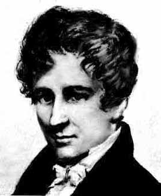

| Choisissez votre langue ! | Choose your language ! |
Galerie des portraits
Portrait gallery
| Niels-Henrik Abel (1802-1829) NOR | Johann Peter Gustav Lejeune Dirichlet (1805-1859) DE |
|  |
Le lemme d'Abel
Abel's lemma
\( \displaystyle \left | \sum_{i=0}^{n} u_{i} v_{i}\right |\leqslant Au_{0} \)
où A=Sup(|v0|,|v0+v1|, ... ,|v0+v1+ ...+vn|)\( \displaystyle \left | \sum_{i=0}^{n} u_{i} v_{i}\right |\leqslant Au_{0} \)
where A=Sup(|v0|,|v0+v1|, ... ,|v0+v1+ ...+vn|)démonstration
Posons sn=v0+v1+ ... +vnOn a:
\( \displaystyle \sum_{i=0}^{n}u_{i}v_{i}=u_{0}s_{0}+u_{1}\left ( s_{1}-s_{0} \right )+...+u_{n}\left ( s_{n}-s_{n-1} \right ) \)
\( \displaystyle \sum_{i=0}^{n}u_{i}v_{i}=s_{0}\left ( u_{0}-u_{1} \right )+s_{1}\left ( u_{1}-u_{2} \right )+...+s_{n-1}\left ( u_{n-1}-u_{n} \right )+s_{n}u_{n} \)
Comme u0 ≥ u1 ≥ u2 ≥ ...On a :
|si|(ui-1-ui) ≤ A(ui-1-ui)
Et aussi:
|sn|un ≤ Aun
De sorte que le lemme s'obtient par sommation en appliquant l'inégalité triangulaire.
proof
Let sn=v0+v1+ ... +vnWe have:
\( \displaystyle \sum_{i=0}^{n}u_{i}v_{i}=u_{0}s_{0}+u_{1}\left ( s_{1}-s_{0} \right )+...+u_{n}\left ( s_{n}-s_{n-1} \right ) \)
\( \displaystyle \sum_{i=0}^{n}u_{i}v_{i}=s_{0}\left ( u_{0}-u_{1} \right )+s_{1}\left ( u_{1}-u_{2} \right )+...+s_{n-1}\left ( u_{n-1}-u_{n} \right )+s_{n}u_{n} \)
Since u0 ≥ u1 ≥ u2 ≥ ...We have:
|si|(ui-1-ui) ≤ A(ui-1-ui)
And also:
|sn|un ≤ Aun
So that the lemma is obtained by summation by applying the triangle inequality.
Le théorème de Dirichlet
Dirichlet's theorem
démonstration
Soit ε un nombre réel > 0 donné.On peut trouver N tel que n > N ⇒ vn < ε/2K.
Comme:
\( \displaystyle \sum_{i=p+1}^{q}u_{i}=\sum_{i=0}^{q}u_{i}-\sum_{i=0}^{p}u_{i} \)
On a:\( \displaystyle \left| \sum_{i=p+1}^{q}u_{i}\right|\leqslant \left| \sum_{i=0}^{q}u_{i}\right|+\left| \sum_{i=0}^{p}u_{i}\right| \)
Donc:\( \displaystyle \left| \sum_{i=p+1}^{q}u_{i}\right|\leqslant 2K \)
Mais d'après le lemme d'Abel:\( \displaystyle \left| \sum_{i=p+1}^{q}u_{i}v_{i}\right|\leqslant Av_{p+1} \)
où A ≤ 2K.Donc si p ≥ q > N, il vient:
\( \displaystyle \left| \sum_{i=p+1}^{q}u_{i}v_{i}\right|\leqslant \varepsilon \)
La série de terme général unvn satisfait donc au critère de cauchy, elle est donc convergente.proof
Let ε a real number > 0 given.We can find N such that n > N ⇒ vn < ε/2K.
Since :
\( \displaystyle \sum_{i=p+1}^{q}u_{i}=\sum_{i=0}^{q}u_{i}-\sum_{i=0}^{p}u_{i} \)
We have :\( \displaystyle \left| \sum_{i=p+1}^{q}u_{i}\right|\leqslant \left| \sum_{i=0}^{q}u_{i}\right|+\left| \sum_{i=0}^{p}u_{i}\right| \)
Hence :\( \displaystyle \left| \sum_{i=p+1}^{q}u_{i}\right|\leqslant 2K \)
But, according Abel's lemma\( \displaystyle \left| \sum_{i=p+1}^{q}u_{i}v_{i}\right|\leqslant Av_{p+1} \)
where A ≤ 2K.So if p ≥ q > N, we get :
\( \displaystyle \left| \sum_{i=p+1}^{q}u_{i}v_{i}\right|\leqslant \varepsilon \)
The series with general term unvn satisfies this way Cauchy's criterion, so it is convergent.Application aux séries alternées
Le théorème de Dirichlet admet le corollaire important suivant:Application to alternating series
Dirichlet's theorem admits the following important corollary:où (un) est une suite décroissante de termes positifs tendant vers 0. Alors (s,a) est convergente.
where (un) is a decreasing sequence of positive terms tending to 0. Then (s,a) is convergent.
On retouve ainsi une démonstration simple de la convergence de la
Remarque:
Dans le cas précis ci-dessus, la suite des sommes partielles d'ordre pair est décroissante et converge vers la somme de la série. La suite des sommes partielles est croissante et converge aussi vers la somme de la série. (s2n) et (s2n+1) sont donc deux suites .Ce qui fait que si S est la somme de la série on a toujours:
s2n ≥ S ≥ s2n+1
et la différence s2n-s2n+1 est une majoration de l'erreur commise en remplaçant S par s2n.
Le test d'Abel
Le théorème de Dirichlet admet une autre conséquence importante:We thus find a simple proof of the convergence of the
Note:
In the precise case above, the sequence of partial sums of even order is decreasing and converges towards the sum of the series. The sequence of partial sums is increasing and also converges towards the sum of the series. (s2n) and (s2n+1) are therefore two sequences .This means that if S is the sum of the series, we always have:
s2n ≥ S ≥ s2n+1
and the difference s2n-s2n+1 is an upper bound for the error made in replacing S by s2n.
Abel's test
Dirichlet's theorem admits another important consequence:démonstration
En effet la suite (un) est forcément convergente soit u sa limite.Posons an=|u-un|
Alors la suite (an) est décroissante et tend vers 0.
Il en résulte que la série de terme général anvn converge d'après le théorème de Dirichlet.
Supposons que (un) soit croissante, de sorte que an=u-un.
Alors la série de terme génral uvn converge, de même que celle de terme général (u-un)vn.
Par différence on voit que la série de terme général unvn converge également.
Le raisonnement est identique en remplaçant la différence par une somme quand (un) est décroissante.
proof
Indeed the sequence (un) is necessarily convergent, let u be its limit.Let an=|u-un|
Then the sequence (an) is decreasing and tends to 0.
It follows that the series of general term anvn converges according to Dirichlet's theorem.
Suppose that (un) is increasing, so that an=u-un.
Then the series of general term uvn converges, as well as that of general term (u-un)vn.
By difference we see that the series of general term unvn also converges.
The reasoning is identical by replacing the difference by a sum when (un) is decreasing.
|
Création Gilles Dubois - licence CC-BY-SA
Created by Gilles Dubois - licence CC-BY-SA
|
Septembre 2023
September 2023
|
Version mobile Jquery
Mobile Jquery version
|
|